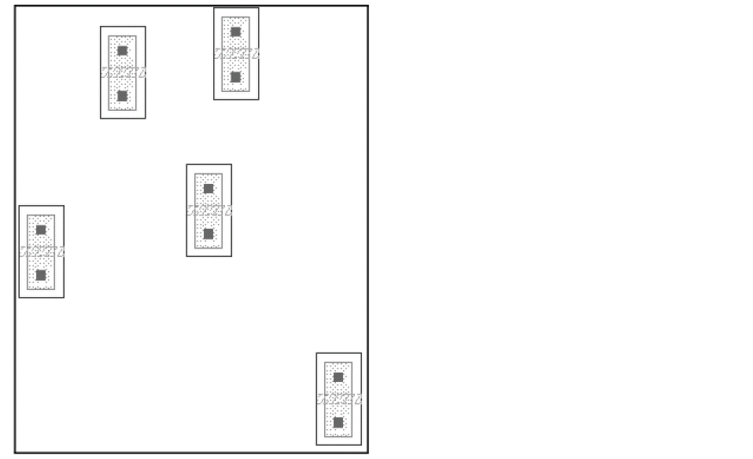
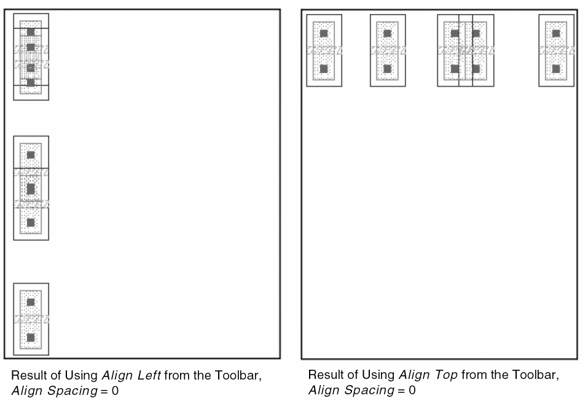
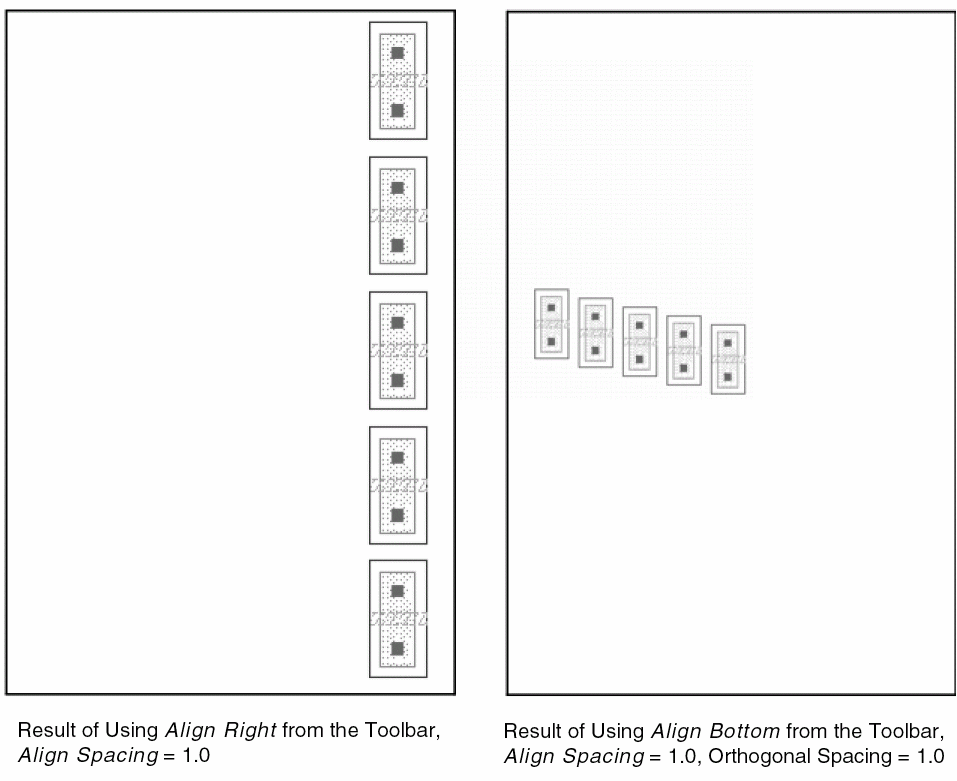
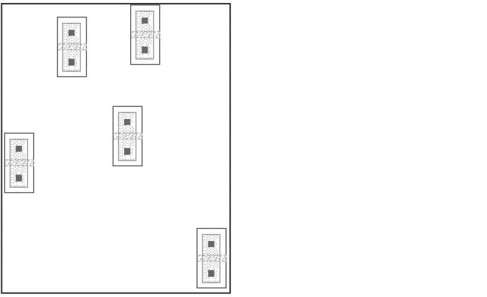
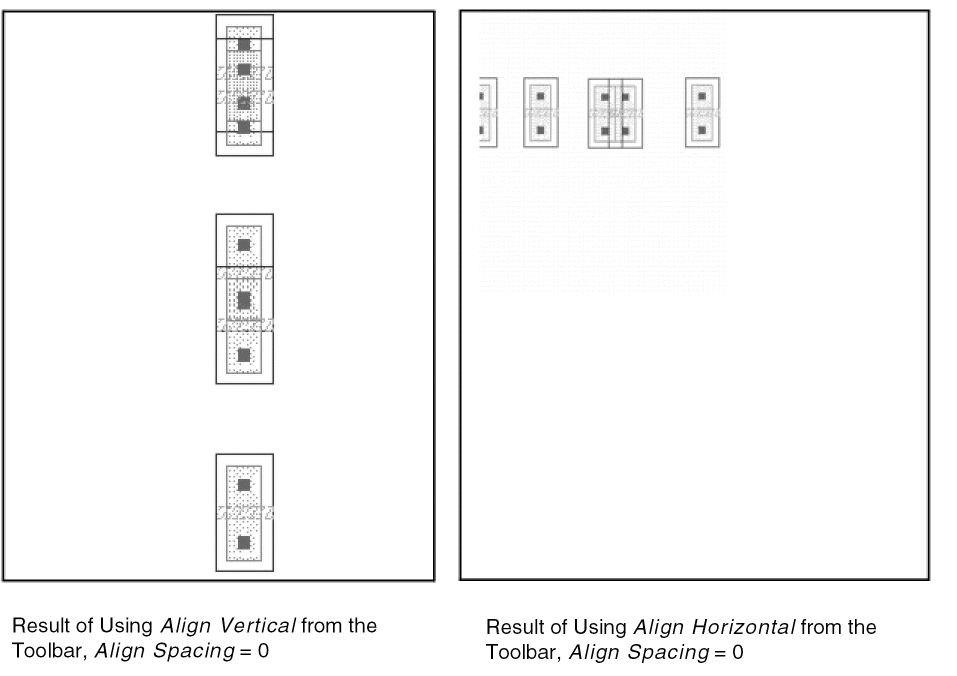

Aligning Objects by Using the Align Toolbar
For performing quick alignment operations by using the Align command, use the Window - Toolbars - Align toolbar. Using the toolbar, you can perform left, right, top, and bottom alignment of the selected objects. You can also align them vertically or horizontally. The toolbar also provides the option of specifying alignment and orthogonal spacing values.
To specify more advanced align options, such as the reference point, object, or layer, the align direction, and the sort order, you can use the Align form, accessed using Edit – Advanced – Align.
To align the left, right, top, or bottom edges of the selected objects:
-
On the layout canvas, select the objects to be aligned.
 - Click Align Left, Align Right, Align Top, or Align Bottom on the Align toolbar for the required alignment. The selected objects are aligned to the left, right, top, or bottom edge of the imaginary bounding box around the selected set.
- To evenly space the objects, select Align Spacing and enter the value in user units of the amount by which you want to separate the objects. If you do not use the Apply Spacing, the objects retain their original spacing. They are aligned, but not evenly spaced.
- To space the objects perpendicular to the Align Direction as well, select the Orthogonal Spacing option. This option is available only if Apply Spacing is selected.
-
To align objects of a specific reference layer, select the Use Reference Layer option and select a reference layer.
In the following example, the selected objects have been aligned first to the left and then to the top. The objects have not been spaced.
Alignment in the following examples uses spacing.
You can similarly align objects horizontally or vertically. The following example illustrates this functionality. The figure shows the objects that need to be aligned.
The following figure shows the objects aligned vertically and horizontally.

If Align Spacing is not on, the center of the imaginary bounding box around the selected set is considered as the reference point. Objects are then aligned along the imaginary vertical or horizontal line passing through this center point.
If Align Spacing is on, the object closest to the center of the imaginary bounding box around the selected set is regarded as the reference object. Remaining objects are aligned vertically or horizontally with respect to the reference object, separated by Align Spacing distance and Orthogonal Spacing, if specified.
Related Topics
Object Alignment by Using the Quick Align Command
Object Alignment by Using the Align Command
Return to top